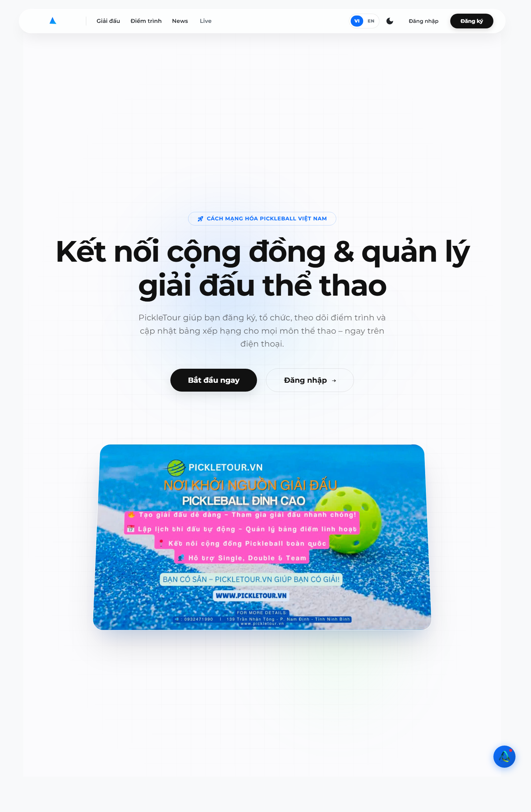
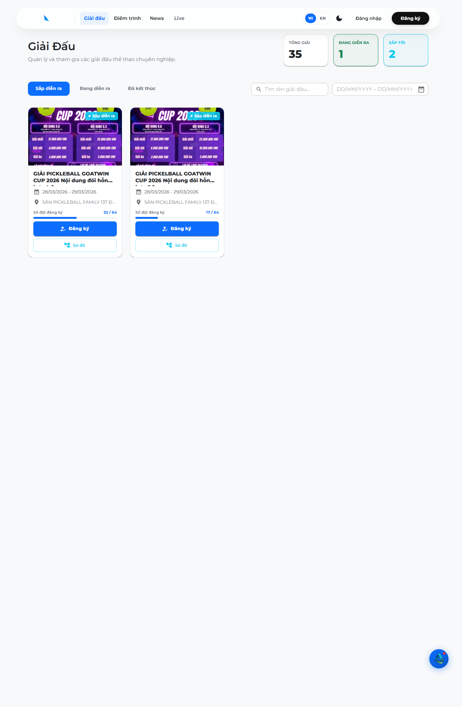
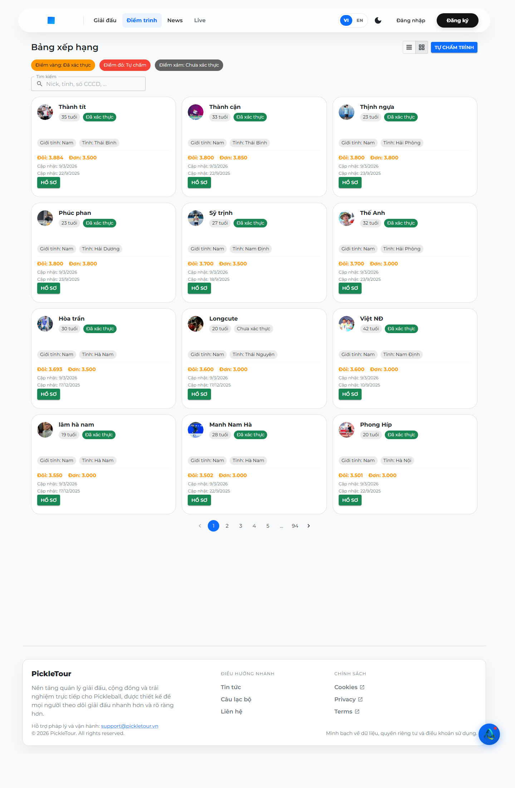
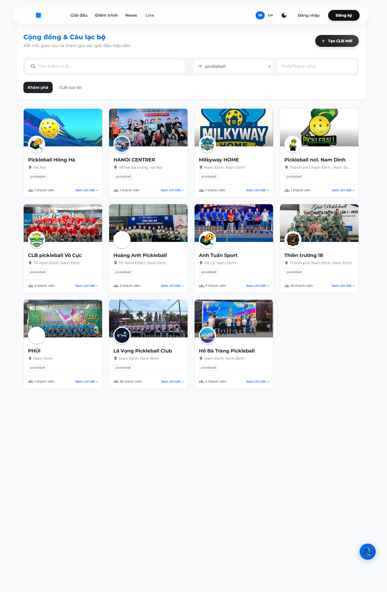

Nền tảng số phục vụ quản lý, vận hành và truyền dẫn thông tin cho hệ sinh thái Pickleball tại Việt Nam. PickleTour kết nối người chơi, câu lạc bộ, ban tổ chức, trọng tài và bộ phận vận hành trên cùng một lớp dữ liệu thống nhất.

PickleTour không chỉ đóng vai trò như một ứng dụng đăng ký giải đấu mà còn là một lớp hạ tầng số giúp đồng bộ dữ liệu thi đấu, tổ chức nội dung trực tiếp và tạo đầu mối kết nối cộng đồng Pickleball trên môi trường số. Điều này tạo ra lợi thế rõ ràng cho các hoạt động tổ chức giải và phối hợp truyền thông.
Từ góc nhìn báo cáo lãnh đạo truyền thông, PickleTour thể hiện khả năng gom nhiều nghiệp vụ vào cùng một nền tảng: quản lý giải đấu, cập nhật kết quả, hiển thị live score, hỗ trợ livestream, quản lý cộng đồng và vận hành hỗ trợ người dùng. Cấu trúc này phù hợp để triển khai như một nền tảng số đồng hành cùng các giải đấu và sự kiện Pickleball.



Tạo giải, quản lý nội dung thi đấu, lịch đấu, bracket, check-in và các màn hình điều hành theo từng giải.
Ghi nhận trạng thái trận đấu theo thời gian thực, cập nhật điểm số, kết quả và các màn hình hiển thị liên quan.
Hỗ trợ vai trò trọng tài, quản lý trận theo sân và phục vụ các luồng điều hành thực địa trong quá trình thi đấu.
Có lớp tích hợp phục vụ livestream, kết nối Facebook và các luồng recording/video cho nội dung trận đấu.
Hỗ trợ CLB, hồ sơ công khai, hoạt động cộng đồng, bảng xếp hạng và lớp hiện diện số cho người chơi.
Hỗ trợ KYC bằng CCCD, thông báo mobile, email support, ticket nội bộ và các lớp chính sách công khai.
| Domain public | https://pickletour.vn |
|---|---|
| Ứng dụng mobile | Phiên bản app 1.0.25; iOS build 28; Android versionCode 13 |
| Hỗ trợ liên hệ | support@pickletour.vn |
| Chính sách công khai | Cookies, Privacy, Terms đã có trong giao diện public |
| Ngôn ngữ giao diện | Việt/Anh ở lớp public |
| Tên thương hiệu | PickleTour |
|---|---|
| Website | https://pickletour.vn |
| Email hỗ trợ | support@pickletour.vn |
| Tên pháp nhân/chủ quản | [Điền trước khi phát hành đối ngoại] |
| Mã số thuế | [Điền trước khi phát hành đối ngoại] |
| Người đại diện / chức danh | [Điền trước khi phát hành đối ngoại] |
| Địa chỉ / hotline / store links | [Điền trước khi phát hành đối ngoại] |
PickleTour thể hiện rõ định hướng của một nền tảng số phục vụ cả vận hành giải đấu và truyền thông sự kiện Pickleball. Điểm mạnh không nằm ở một tính năng đơn lẻ mà ở khả năng gom dữ liệu, quy trình và điểm chạm truyền thông về cùng một hệ thống thống nhất.
Với trạng thái sản phẩm hiện tại, PickleTour phù hợp để được xem xét như một giải pháp công nghệ có thể hỗ trợ tổ chức, hiển thị và truyền dẫn thông tin cho hệ sinh thái Pickleball. Bước hoàn thiện tiếp theo trước khi phát hành hồ sơ chính thức ra ngoài là xác nhận khối pháp nhân, store links và các minh chứng đối tác/truyền thông công khai.